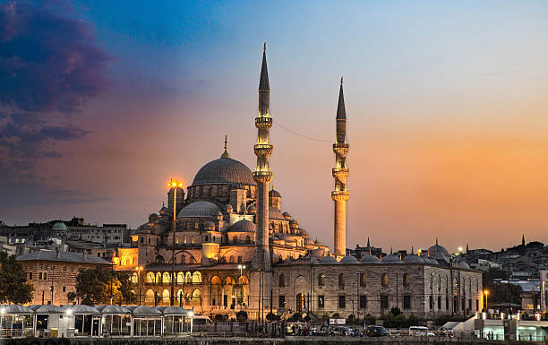
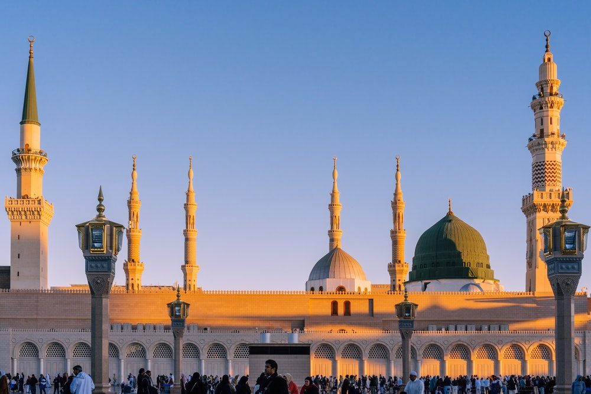

Al-Masjid an-Nabawi (Arabic: المسجد النبوي, lit. 'The Prophetic Mosque'), known in English as The Prophet's Mosque, and also known as Al Haram, Al Haram Al Madani and Al Haram Al Nabawi by locals, is a mosque built by the Islamic prophet Muhammad in the city of Medina in the Al Madinah Province of Saudi Arabia. It was the second mosque built by Muhammad in Medina, after Masjid Quba'a, and is the second largest mosque and second holiest site in Islam, both titles ranking after the Masjid al-Haram in Mecca. It is generally open regardless of date or time, and has only been closed to visitors once in modern times, as Ramadan approached during the 2020 COVID-19 pandemic.